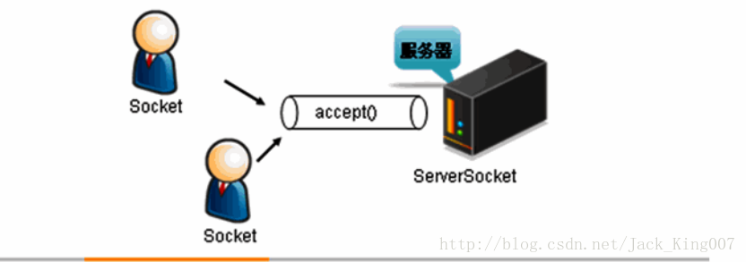
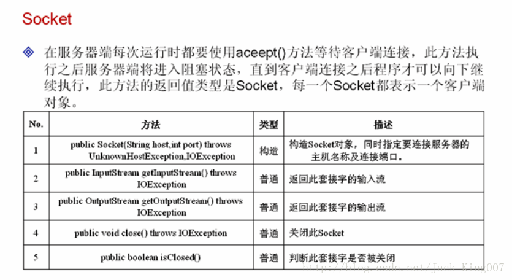
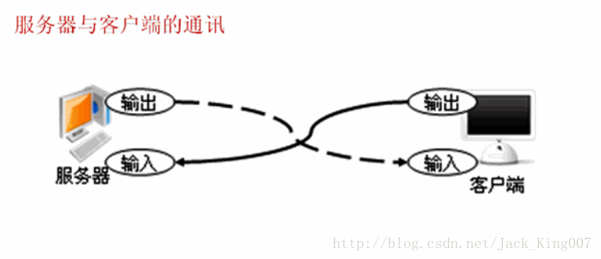
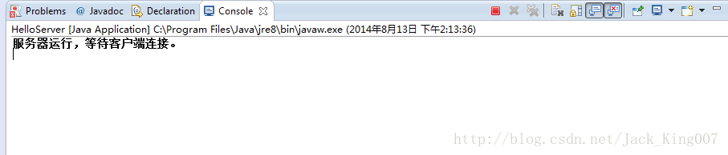

从java网络编程学起（4）
TCP程序设计
了解socket与serverScoket类的作用
掌握ECHO程序的开发
将多线程应用在TCP程序上实现多用户操作
TCP程序设计
在java中使用Socket及套接字 完成TCP程序的开发
使用此类可以方便建立可靠的，双向的，持续的，点对点的通讯通讯连接
在SCOKET的程序开发中，服务器端使用ServerSocket等待客户端的连接
输出
运行结果：服务器运行，等待客户端连接。
了解socket与serverScoket类的作用
掌握ECHO程序的开发
将多线程应用在TCP程序上实现多用户操作
TCP程序设计
在java中使用Socket及套接字 完成TCP程序的开发
使用此类可以方便建立可靠的，双向的，持续的，点对点的通讯通讯连接
在SCOKET的程序开发中，服务器端使用ServerSocket等待客户端的连接
对于java的网络程序来讲 每一个客户端都是用一个Socket对象

在java的网络程序中 客户端只要符合连接的通讯协议那么服务器都可以接受
1.serverScoket类

第一个TCP程序
下面通过ServerSocket类以及Socket完成一个服务器程序开发此服务
客户端输出hello字符串信息 一般分为客户端和服务器端
服务器端
package KownClass ;
import java.net.* ;
import java.io.* ;
public class HelloServer{
public static void main(String args[]) throws Exception {// 所有异常抛出
ServerSocket server = null ; // 定义ServerSocket类
Socket client = null ; // 表示客户端
PrintStream out = null ;// 打印流输出最方便
server = new ServerSocket(8888) ;// 服务器在8888端口上监听
System.out.println("服务器运行，等待客户端连接。") ;
client = server.accept() ;// 得到连接，程序进入到阻塞状态
String str = "<pre name="code" class="java">JDK 在工作中" ;// 表示要输出的信息out = new PrintStream(client.getOutputStream()) ;out.println(str) ;// 向客户端输出信息client.close() ;server.close() ;}};

客户端
package KownClass;
import java.net.* ;
import java.io.* ;
public class HelloClient{
public static void main(String args[]) throws Exception { // 所有异常抛出
Socket client =new Socket("localhost",8888) ;
BufferedReader buf =new BufferedReader(new InputStreamReader(client.getInputStream())) ;
String str = buf.readLine() ;
System.out.println("服务器端输出内容：" + str) ;
buf.close() ;
client.close() ;
}
};输出
JDK 在工作中
其实原理很简单 就是socket服务器在等你连接 为你准备好了返回信息 在你未连接前一直是阻塞情况
等secket客户端 找到主机名和端口 将信息读入 就会输出一些东西（JDK在工作中）....同时你们会发现 他只会接受一次....
2案例 Echo程序（聊天程序）
他是一个网络编程通讯交互的一个经典案例称为回应程序
既客户端输入哪些内容 服务器端会在这里内容钱加上Echo并将信息发挥另一个客户端
当客户端没有输入信息 或者输入bye的时候表示程序运行结束需要结果当前客户端程序
EchoServer可以一直接受客户端请求 而不是一次
package KownClass ;
import java.net.* ;
import java.io.* ;
public class EchoServer{
public static void main(String args[]) throws Exception { // 所有异常抛出
ServerSocket server =new ServerSocket(8888) ; // 服务器在8888端口上监听
Socket client = null ; // 表示客 户端
BufferedReader buf = null ; // 接收输入流
PrintStream out = null ; // 打印流输出最方便
boolean f = true ; // 定义个标记位
while(f){
System.out.println("服务器运行，等待客户端连接。") ;
client = server.accept() ; // 得到连接，程序进入到阻塞状态
out = new PrintStream(client.getOutputStream()) ;
// 准备接收客户端的输入信息
buf = new BufferedReader(new InputStreamReader(client.getInputStream())) ;
boolean flag = true ; // 标志位，表示可以一直接收并回应信息
while(flag){
String str = buf.readLine() ; // 接收客户端发送的内容
if(str==null||"".equals(str)){ // 表示没有内容
flag = false ; // 退出循环
}else{
if("bye".equals(str)){ // 如果输入的内容为bye表示结束
flag = false ;
}else{
out.println("ECHO : " + str) ; // 回应信息
}
}
}
client.close() ;
}
server.close() ;
}
};运行结果：服务器运行，等待客户端连接。
客户端
package KownClass;
import java.net.* ;
import java.io.* ;
public class HelloClient{
public static void main(String args[]) throws Exception { // 所有异常抛出
Socket client = null ; // 表示客 户端
client = new Socket("localhost",8888) ;
BufferedReader buf = null ; // 一次性接收完成
PrintStream out = null ; // 发送数据
BufferedReader input = null ; // 接收键盘数据
input = new BufferedReader(new InputStreamReader(System.in)) ;
buf = new BufferedReader(new InputStreamReader(client.getInputStream())) ;
out = new PrintStream(client.getOutputStream()) ;
boolean flag = true ; // 定义标志位
while(flag){
System.out.print("输入信息：") ;
String str = input.readLine() ; // 接收键盘的输入信息
out.println(str) ;
if("bye".equals(str)){
flag = false ;
}else{
String echo = buf.readLine() ; // 接收返回结果
System.out.println(echo) ; // 输出回应信息
}
}
buf.close() ;
client.close() ;
}
};